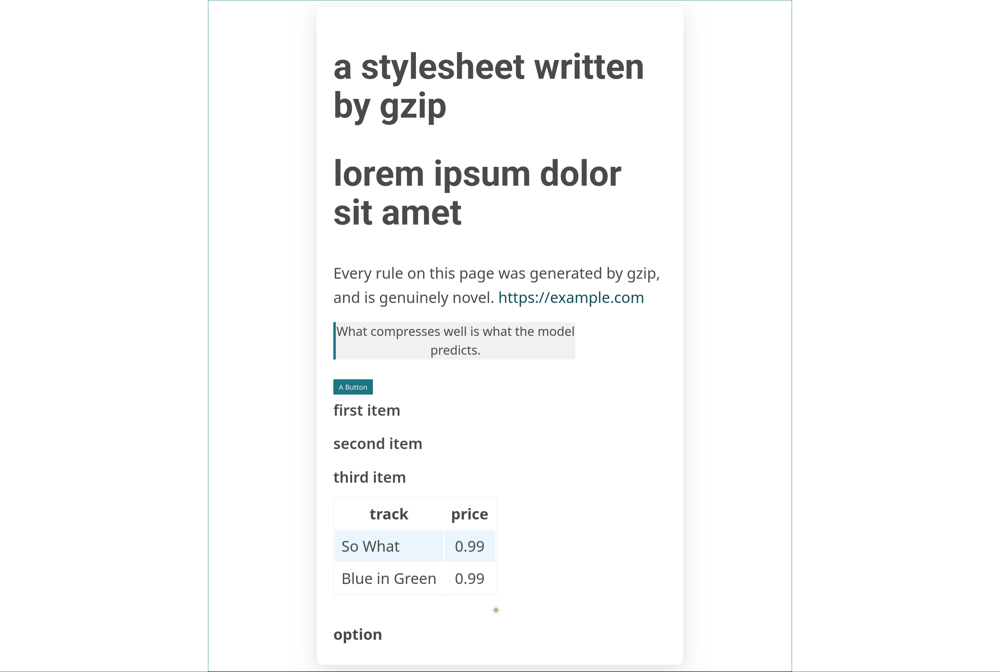

Playing with the language modeling abilities of gzip
With thanks to Nathan Barry's Can gzip be a language model?
Note: I imprecisely say "gzip", "zlib", and "DEFLATE" interchangeably here. Sorry.
I'm fascinated by systems that can work in more than one way by effectively doing the same task backwards. For example, you can run a microphone backwards to create a (terrible) speaker, and you can run a speaker backwards to create a (actually pretty neat for bassy sounds) microphone; a speaker takes electricity and correspondingly pushes a coil through a magnetic field to vibrate air, and a microphone takes air pushing a coil through a magnetic field and generates electricity.
Similarly, compression and prediction are the same task. You can think of the best possible compression as "the most compact way to represent a given dataset", and the best possible predictor as "something that predicts a given dataset given the least information". These are the exact same tasks, just phrased differently. Of course, the obvious question is: how much generativity can we squeeze out of traditional compressors?
Language Modeling Is Compression (2023) touched on the generative abilities of gzip, but it's not the focus of the paper, and it's a pretty degenerate case; they only look one step ahead at a time, which is unfair to gzip.
Context Text (1948 Bytes)
[...] Moreover, some non-party life peers (the number being determined by the Prime Minister) are nominated by an independent House of Lords Appointments Commission. If an hereditary peer also holds a life peerage, he or
gzip Samples (100 Bytes)
– (0k5Ezatme,isbebmvcsouL(nxscbiife peu7vevwt parr,iswfommeeaa are nombban hm, c,on. , pncmm.sexg uam – Suasa8g thformp0iufoof Lo e7vkoasaeka w8viiufoounb,xbepe,deto.,5mdrSu r,teepe,rgesgS,be.dcyh2vLnary – CxOsic,*auEfOlnknm } eaa0oplutfpq(afcnuChanm,areovervr LoventiL.myehm;nrhvnywsaO7seeg Apo,arelyehm;.
Not good. DEFLATE works by back-references to substrings, and a back-reference needs a minimum match of three bytes to trigger. Decoding one byte at a time, you only use the plain Huffman costs. The entire point of gzip is saving bytes by representing repeated substrings of several bytes as something simpler.
Nathan Barry's gzipt (blog post linked above) expands on this excellently. gzipt harnesses gzip's brains in a much better way: it runs a beam search over bytes. gzipt keeps a beam of several candidate continuations alive at once and looks a sizable horizon ahead (24 bytes here, beam width 32) before committing, allowing long substrings to demonstrate good compressibility on a long enough timespan for gzip to really work its magic. If you set gzipt to beam width 1 and horizon 1, you get the degenerate case in Language Modeling Is Compression. With larger horizons and beam widths, you get visible structure:
MENENIUS:
'Though all at once canqMARCIUS:
Pray now, nocamest thou to a morsel .LARTIUS:
Hence, and
I' the end admire, where G
again; and after it ag .LARTIUS:
Hence, and
I' the end adLARTIUS:
fame and
There's also a neat trick in zlib that makes this affordable: you can clone a compressor's state:
base = zlib.compressobj(level)
base.compress(context) # do the expensive work once
for cand in candidates:
clone = base.copy() # fork the encoder state
cost = len(clone.compress(cand) + clone.flush()) # marginal cost of cand$ time python3 gzipt.py --corpus data/tinyshakespeare.txt --prompt $'MENENIUS:\n' --length 200 1>/dev/null
real 0m12.826s
user 1m8.207s
sys 0m2.413sVery cool. What can we do with it?
Does it have to be gzip?
For text generation, yes.
Of course, my first thought was "we have better than DEFLATE nowadays, can we swap out the brain"? I added an --algo flag and tried five:
| algo | output |
|---|---|
| zlib | recognizable Shakespeare-ish text |
| bz2 | ScdMENIURy3dywyywyyywyy... |
| zstd | I tell you,; e. ...eee e a |
| brotli | ' \n \n '... |
| lzma | almost entirely newlines (and it took an hour to do it!) |
Everything except zlib quickly collapses into repeating a couple cheap bytes. Why? Here's how the compressed length changes when you add a byte:
| algo | compress(a) | compress(aa) |
|---|---|---|
| zlib | 9 | 10 |
| bz2 | 37 | 37 |
| lzma | 60 | 60 |
This is good compression, but gzipt's implementation of the beam search can't tell apart candidates, so it breaks ties towards some globally cheap byte. Essentially, we're having quantization issues; the information difference the beam is trying to look at is smaller than a byte, the smallest unit we're measuring in.
(on this toy input, zstd and brotli do move, but on a real 32KB context the one-byte difference rounds away into the whole-stream total and collapses too)
The only reason zlib works here also happens to be the clone trick. We measure each candidate's marginal cost directly, avoiding the whole-stream rounding. The others, lacking an API that allows us to clone the compressor state, have to recompress the entire context + candidate every single time, and that's why small differences get rounded off.
Saving bz2
An idea I had to make the other algorithms produce coherent text is what I'm going to call "span mode" — instead of generating one byte at a time, we make each candidate an 8-byte span that actually follows the current context somewhere in the corpus (by a quick n-gram lookup). This makes the cost difference between a good and bad span quite a few bytes. This worked beautifully (this is bz2):
I tell you, friends, most charitable care
Have the patricians of you. For your wants,
Your suffering in this dearth, you
The obvious catch is that, in span mode, the candidates come from the corpus. We're reranking and reassembling pieces from the corpus instead of generating novel text. This is neat but significantly less "pure", so I kept it as a secondary mode.
What can it do?
HellaSwag
We clearly have what you could call some degree of natural language comprehension here. Can gzip answer HellaSwag?
Yes.
Instead of doing generation with gzipt, I wrote a slightly different harness to allow compressors to answer multiple-choice. We don't use beam search or anything; we just compress context + ending and pick the cheapest. This is quite elegant and also revives the idea of using other algorithms.
Out of the box, scoring solely against the question's own context, we score 26.4%, barely but clearly above chance. Nice. Giving the compressor a block of random other HellaSwag examples first takes us up to 27%. Giving the compressor other examples from the same activity category (excluding same source_id siblings) takes us to 28.7%. Very cool.
Since other algorithms are viable again here, I plugged in zstd and lzma with the same tricks. They got us 32.5% and 33.0% respectively — beating out GPT-2-124M!!!!!! This was the coolest, most thrilling finding. Compression algorithms are black fucking magic and encode a shitload of surprising information
Coding
It's 2026, we're doing natural language processing. We obviously have to try and see whether gzip can code.
I downloaded the PostgreSQL source code (which I picked for being a famously well-commented codebase), fed pieces into the compressor, and prompted it with the comment:
/*
* Release a lock previously acquired with LWLockAcquire.
*/I tried this and a few different prompts using byte mode. Typically, it gave us maybe another comment, vomited a couple keywords, maybe a real function name, and then looped. On the other hand, span mode produced this:
int
LWLockNewTrancheId(const char *name)
{
int idx;
if (!name)
ereport(ERROR,
(errcode(ERRCODE_INVALID_NAME),
errmsg("tranche name cannot be NULL")));Damn, pretty promising. It has problems though: I tried running it longer (cut for brevity), and it keeps screwing around writing long, highly-compressible ereport error blocks. It never really does any actual logic (I'm guessing because it's information-dense, which means not highly compressible, which means gzip doesn't like it).
Is there a language/domain where it can code?
Thinking about the properties of gzip here and what it would take to get it to write good code:
- We need to minimize non-local obligations. gzip focuses on surface-level co-occurrence, not real dependencies.
- We need highly-compressible logic, with minimal low-entropy boilerplate that it can get addicted to writing.
How about SQL? We don't need to worry about managing memory, or handling variables, or even really control flow (a SELECT can work stranded anywhere pretty much no matter what).
I cobbled together a small schema, handwrote a corpus of a few hundred valid SELECTs, and prompted span mode with SELECT. Out of everything that came out: 91% of the outputted statements were valid, and 55% of them were novel and valid! gzip can code!
SELECT name, dept_id FROM employees WHERE salary > 50000 ORDER BY age ASC;
SELECT MIN(dept_id) FROM employees WHERE age < 25 ORDER BY dept_id DESC;Of course, most of it isn't useful code. One of the outputted lines was, humorously:
SELECT name, dept_id FROM employees WHERE age >= 80000Useful code
We need flat, statement-local, redundant code. After experimenting with a couple other things, I decided that CSS was perfect for this. A stylesheet is a pile of independent rules, each rule is a pile of independent property: value; declarations, the only nesting is one shallow brace level, unknown properties aren't fatal, and the open-source CSS I found repeats padding: 0; and color: #fff; a million times.
So I primed it on a few real classless stylesheets (normalize, sakura, mvp) and let it generate. I also had higher standards this time: I validated requiring real standard properties rather than the nearly-unconstrained --custom, as well as demanding that the rules actually be novel. It produced CSS such as:
button { height: auto; padding-top: 0; }
ul { padding-left: 1.4em; margin-top: 0px; margin-bottom: 2.5rem; background-color: transparent; }
input[type="radio"] { box-sizing: border-box; padding: 0; }This is a huge victory. These are sensible, correct, novel rules. I also tried dropping a toy HTML page in front of it, and it produced this beauty:

All the CSS on that page came out of fucking gzip. Yes, it's ugly as fuck, but it validates, it renders, and it wasn't copied whole. Charming.
Conclusion
Are traditional compressors good language models? No, but the fact that lzma from 1998 can beat GPT-2-124M at HellaSwag is really cool, and it's a neat demonstration of the compression-prediction equivalence.